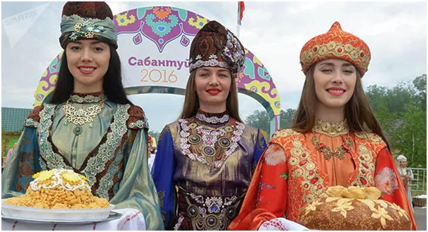
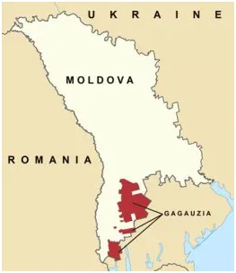
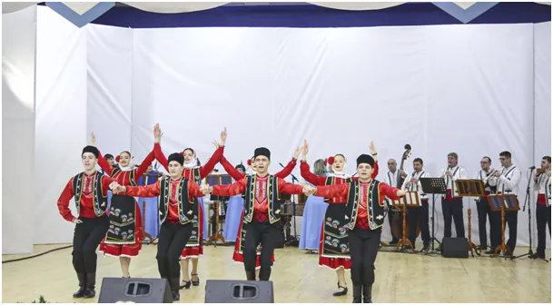

Gagauzja, kraina która wędruje.
Kilka godzin jazdy z Polski, na terenie Mołdawii leży Gagauzja, a właściwie Terytorium Autonomiczne Gagauzji, zamieszkałe przez prawosławnych Gagauzów, lud turkmeński.

Pierwsza Gagauzka jaką spotkałem pracowała w hotelu, w Turcji, u O tym narodzie dowiedziałem się podczas przygotowań podróży do Mołdawii, która nigdy nie doszła do skutku. Życie lubi zaskakiwać, pierwsza Gagauzka, jaką spotkałem, pracowała w hotelu, w Turcji, u mojego zaprzyjaźnionego Kurda Ismeta. Oni rozmawiali po turecku, co mi bardzo pomagało, bo dopiero zaczynałem się uczyć tego języka a Kurd nie miał do mnie cierpliwości, gdy łamałem turecki. Z Kurdem rozmawiałem po angielsku, z Gagauzką po rosyjsku, ale gdy przypomniałem sobie kilka rumuńskich zwrotów i puściłem w barze muzykę z rumuńskiego wesela, Gagauzka była zachwycona. Mołdawia to taki mix, dawniej nazywana Besarabią była pograniczem katolicyzmu, prawosławia i islamu. Dziś leży na pograniczu interesów UE (Rumuni), USA (Ukrainy) i Rosji (Naddniestrze).

Terytorium Autonomiczne Gagauzji jest zdefiniowane jako rozrzucony zbiór gmin, gdzie dominują Gagauzi. Jeśli w dowolnej z mołdawskich gmin urodzi się mały Gagauz i gmina ta liczebnie przekroczy wyznaczony procentowy parytet Gagauzów, to staje się Terytorium Autonomiczne Gagauzji jest zdefiniowane jako rozrzucony zbiór gmin, gdzie dominują Gagauzi. Jeśli w dowolnej z mołdawskich gmin urodzi się mały Gagauz i gmina ta liczebnie przekroczy wyznaczony procentowy parytet Gagauzów, to staje się częścią Gagauzji, tak po prostu. Trzeba przyznać, że świat jest o wiele bardziej kolorowy, niż to widzimy w Europie. Kolorowy, jak stroje ludowe tego ludu, który przez wieki żył na granicy Rzeczpospolitej a dziś w Polsce jest prawie nieznany.

Gagauzów jest mniej niż 200 tysięcy, ale ich tożsamość jest na tyle silna, że przetrwali setki lat jako naród. Podobnych narodów wokół Morza Czarnego jest wiele, szczególnie po jego drugiej stronie, na Kaukazie.
Paweł Klimczewski